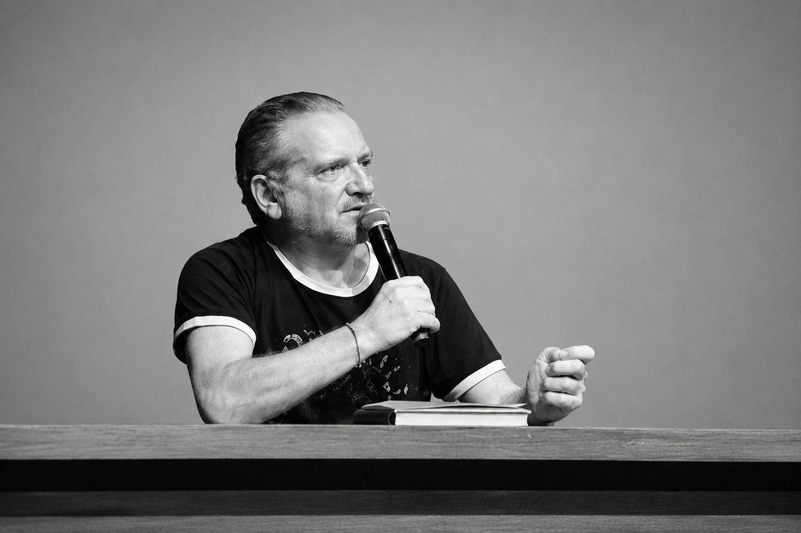
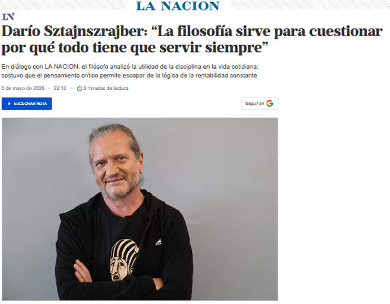
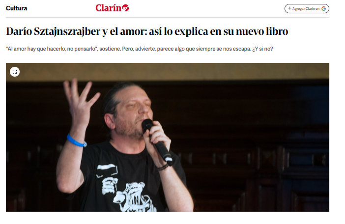

Medios

“Un recorrido por conversaciones, entrevistas y podcasts donde la filosofía, el arte y el pensamiento crítico encuentran su voz.”
YouTube
Esta clase de Darío Sztajnszrajber es la primera del curso "Filosofía del amor" realizado en 2021, de forma virtual y por streaming, a través de la plataforma de Ciudad Cultural Konex. Abre el curso analizando los orígenes del deseo y las primeras experiencias amorosas desde una perspectiva filosófica. Se exploran los relatos sobre el amor, cuestionando la verdad y la esencia de estas vivencias en el contexto de la melancolía otoñal.
Darío Sztajnszrajber y Soledad Barruti exploran la tensión entre la prudencia y el riesgo en la vida cotidiana. Analizan cómo la búsqueda de seguridad absoluta puede llevar a una existencia anestesiada, mientras proponen habitar experiencias vulnerables para reconectar con lo vital y desafiar las imposiciones del pensamiento calculado.
En este episodio de Mejor hablar, conversamos con el filósofo y escritor Darío Sztajnszrajber sobre filosofía, psicoanálisis, muerte y el lugar que ocupan las preguntas en nuestra vida. A lo largo de la charla aparecen temas que atraviesan a cualquiera: el vínculo con los padres, la terapia, la necesidad de encontrar sentido y el valor de pensar incluso cuando no hay respuestas definitivas. En esta conversación hablamos sobre:el cruce entre filosofía y psicoanálisis, su historia familiar, el vínculo con la terapia, el papel de las preguntas en el pensamiento filosófico y por qué a veces entendemos mejor una relación después de la muerte
Spotify
Charla con Darío sobre filosofía y psicoanálisis: Es importante saber? Cuánto nos duele la realidad? Qué pasa con la muerte? Y con el amor? Es importante conocer lo que amamos?
Amar, correr, distraerse, seguir. Así se nos va el tiempo sin detenernos a pensar qué estamos haciendo con lo que sentimos. En este episodio de La Fórmula, Darío Sztajnszrajber propone frenar y mirar de frente eso que solemos esquivar: la angustia, el aburrimiento, la finitud, los mandatos del amor y la forma en que habitamos el tiempo. Una conversación para rascar donde no pica, levantar la cabeza y animarse a pensar distinto, incluso cuando incomoda. Porque quizás no se trata de estar bien todo el tiempo, sino de estar despiertos.
Periódicos

La Nación

Clarin